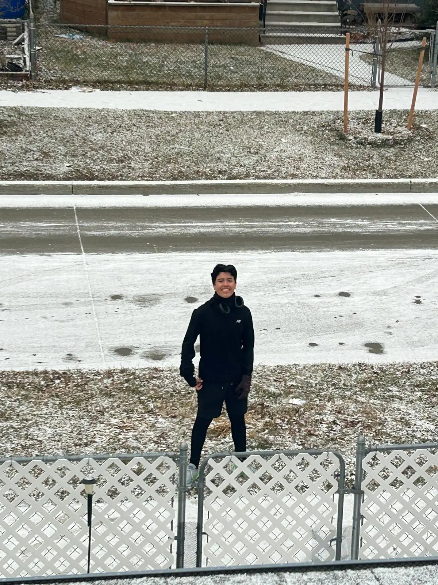
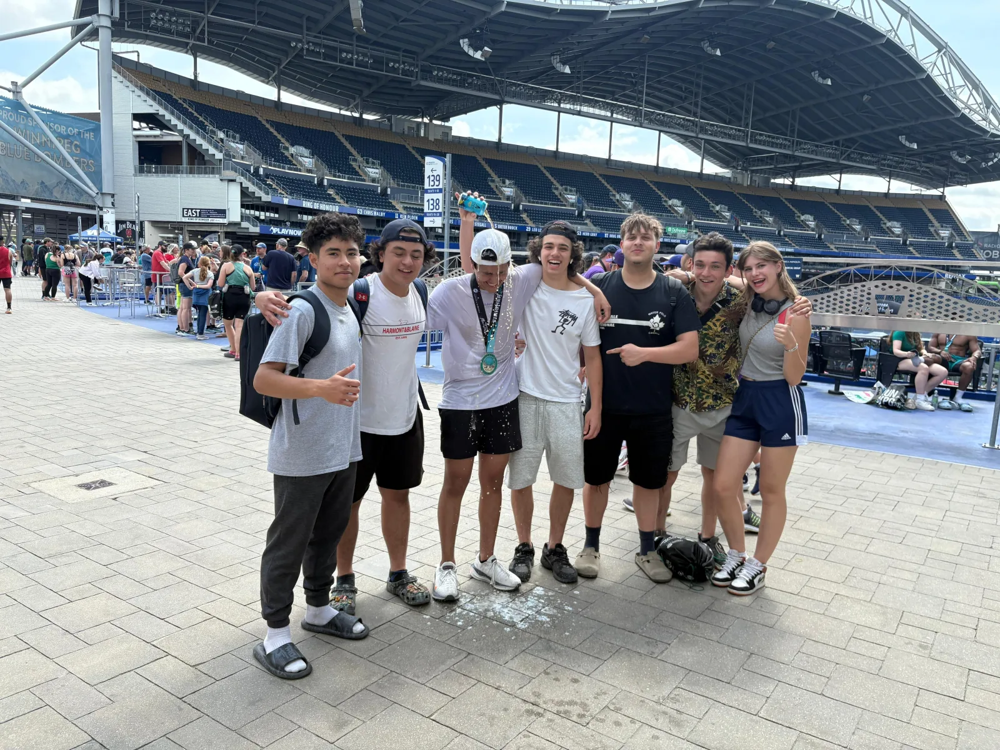

HISTORIA 01 / CANADÁCALI ↗︎ WINNIPEG
Llegué solo. Volví con historias.
Me fui solo a Winnipeg, Canadá. No conocía a nadie y me tocó armar mi vida desde cero.
Me adapté a otro colegio, a otra rutina y a días con temperaturas de −40. Me metí a un curso de contabilidad, lo cursé un semestre e hice muchísimos amigos. Para ganarme mis primeros dólares, paleé nieve casa por casa.
Allá empecé a correr. Lo que pasó después merece su propia historia.

